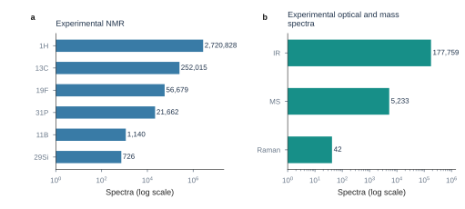
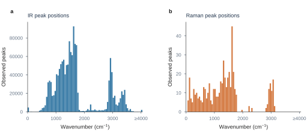

Exploring the spectroscopy datasets
This tutorial explores the cleaned experimental collection: how many molecules and spectra it contains, which nuclei are available, where the peak positions lie and how the data are split for learning. The plots use the full cleaned-data histograms.
Read the dataset summary
The summary contains H/C molecular counts and separate spectral counts for each experimental view. Read these fields before choosing a dataset for your task.
import json, sys, io
from pathlib import Path
from IPython.display import display, SVG
root = next(p for p in [Path.cwd(), *Path.cwd().parents] if (p / 'openmolspec_bench').is_dir())
sys.path.insert(0, str(root / 'scripts'))
summary = json.loads((root / 'documentation/assets/cleaned-data-summary.json').read_text())
print('H/C molecules:', summary['nmr']['molecular_identities'])
print('H spectra:', summary['nmr']['counts']['h_spectra'])
print('C spectra:', summary['nmr']['counts']['c_spectra'])
for modality, view in summary['experimental']['views'].items():
print(modality, view['spectra'], 'spectra;', view['molecules'], 'molecules')
H/C molecules: 2678511
H spectra: 2720828
C spectra: 252015
IR 177759 spectra; 168197 molecules
19F 56679 spectra; 50402 molecules
31P 21662 spectra; 18238 molecules
MS 5233 spectra; 4980 molecules
11B 1140 spectra; 1017 molecules
Raman 42 spectra; 39 molecules
29Si 726 spectra; 636 molecules
Molecular size and chemical shifts
Heavy-atom count and molecular weight describe the chemical space available for training. The NMR panels show the positions of parsed H/C peaks in ppm. Tail bins collect values outside the displayed central range, so all cleaned records contribute to the plots.
from build_manual_examples import distributions
import matplotlib.pyplot as plt
figures = distributions()
def show(name):
stream = io.StringIO()
figures[name].savefig(stream, format='svg', metadata={'Date': None})
display(SVG(stream.getvalue()))
show('data-cleaned-nmr')
show('data-cleaned-nmr-shifts')


Spectral coverage and peak distributions
The nucleus-count panel uses a logarithmic axis to display both abundant and less common nuclei. MS panels describe molecular size and m/z peak positions; IR/Raman panels use wavenumber in cm⁻¹. These representations help choose channel masks, input grids and sampling policies.
for name in ['data-cleaned-experimental', 'data-cleaned-ms', 'data-cleaned-vibrational']:
show(name)
for figure in figures.values():
plt.close(figure)



Training, validation and test files
The cleaned H/C collection retains named train/validation/test files. The summary records their molecular counts and checks standard-identity intersections. Use the training set for fitting and the validation set for choosing model settings.
for role, view in summary['nmr']['files'].items():
print(role, view['records'], 'molecules')
print('Cross-split identity intersections:', summary['nmr']['split_identity_overlaps'])
train 2172790 molecules
val 250836 molecules
test 254885 molecules
Cross-split identity intersections: {'train/val': 0, 'train/test': 0, 'val/test': 0}